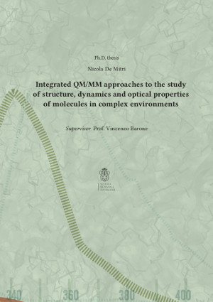
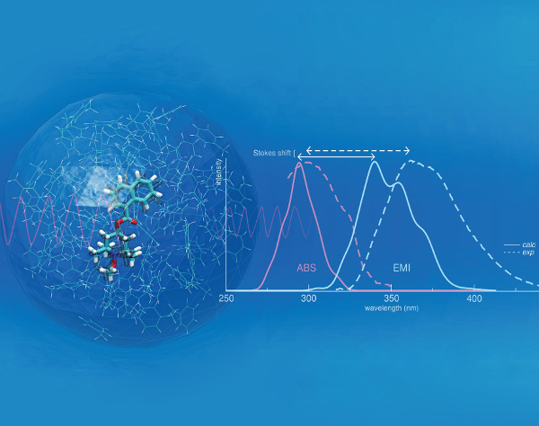

I live in Cambridge, UK, and I'm a scientific software developer at Enthought.
I work with Python on consulting projects involving data management and visualisation.

Belenguer, A. M., Lampronti, G. I., De Mitri, N., Driver, M., Hunter, C. A., & Sanders, J. K. (2018). Understanding the influence of surface solvation and structure on polymorph stability: a combined mechanochemical and theoretical approach. Journal of the American Chemical Society, 140(49), 17051-17059.
Pagliai, M., Mancini, G., Carnimeo, I., De Mitri, N., & Barone, V. (2017). Electronic absorption spectra of pyridine and nicotine in aqueous solution with a combined molecular dynamics and polarizable QM/MM approach. Journal of computational chemistry, 38(6), 319-335.
Prampolini, G., Campetella, M., De Mitri, N., Livotto, P. R., & Cacelli, I. (2016). Systematic and automated development of quantum mechanically derived force fields: The challenging case of halogenated hydrocarbons. Journal of chemical theory and computation, 12(11), 5525-5540.
Salvadori, A., Licari, D., Mancini, G., Brogni, A., De Mitri, N., & Barone, V. (2014). Graphical interfaces and virtual reality for molecular sciences. Reference Module in Chemistry, Molecular Sciences and Chemical Engineering (chapter of), Elsevier.
Prampolini, G., Monti, S., De Mitri, N., & Barone, V. (2014). Evidences of long lived cages in functionalized polymers: Effects on chromophore dynamic and spectroscopic properties. Chemical Physics Letters, 601, 134-138.

De Mitri, N., Prampolini, G., Monti, S., & Barone, V. (2014). Structural, dynamic and photophysical properties of a fluorescent dye incorporated in an amorphous hydrophobic polymer bundle. Physical Chemistry Chemical Physics, 16(31), 16573-16587.
De Mitri, N., Monti, S., Prampolini, G., & Barone, V. (2013). Absorption and emission spectra of a flexible dye in solution: A computational time-dependent approach. Journal of chemical theory and computation, 9(10), 4507-4516.
Barone, V., Cacelli, I., De Mitri, N., Licari, D., Monti, S., & Prampolini, G. (2013). Joyce and Ulysses: integrated and user-friendly tools for the parameterization of intramolecular force fields from quantum mechanical data. Physical Chemistry Chemical Physics, 15(11), 3736-3751.
Lipparini, F., Cappelli, C., Scalmani, G., De Mitri, N., & Barone, V. (2012). Analytical first and second derivatives for a fully polarizable QM/classical hamiltonian. Journal of chemical theory and computation, 8(11), 4270-4278.